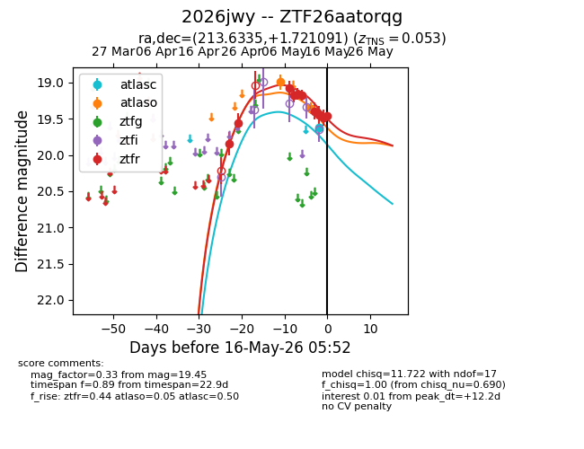
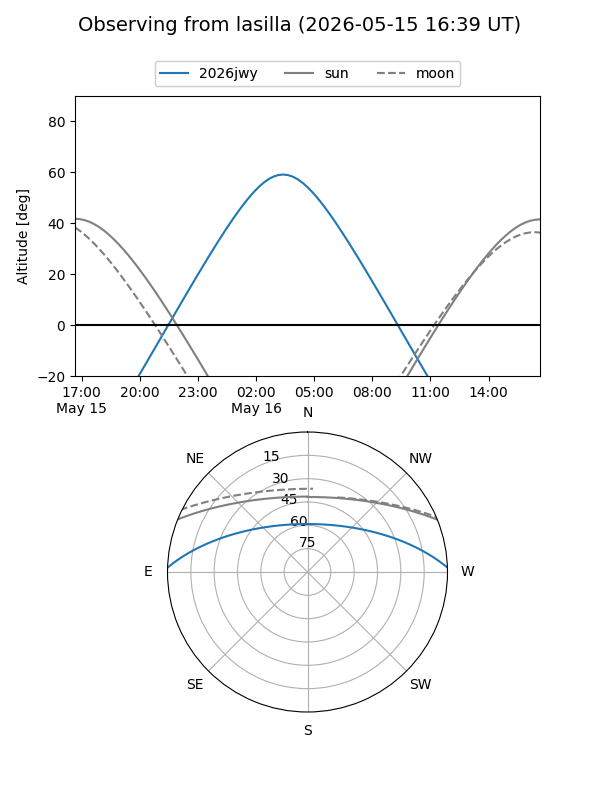
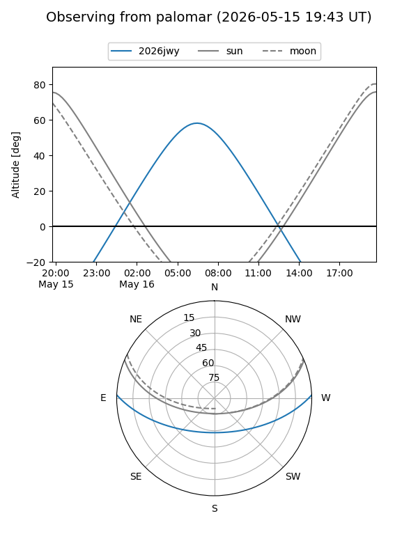
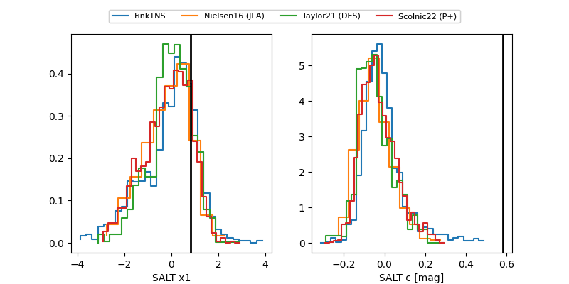

2026jwy
Target 2026jwy at 2026-05-16 05:54
Aliases and brokers:
FINK: link
Lasair: link
ALeRCE: link
TNS: link
YSE: link
alt names
ZTF26aatorqg (ztf,fink_ztf)
2026jwy (tns,yse)
Coordinates:
equatorial (ra, dec) = 213.6335,+1.72109
equatorial (HMS+DMS) = 14:14:32.05,+01:43:15.93
galactic (l, b) = (344.5243,+57.71980)
Flags:
confirmed ia
Photometry:
last atlasc=19.61, atlaso=19.36, ztfr=19.45
1 atlasc, 2 atlaso, 10 ztfr detections
Lightcurve

Visibility


Additional plots
